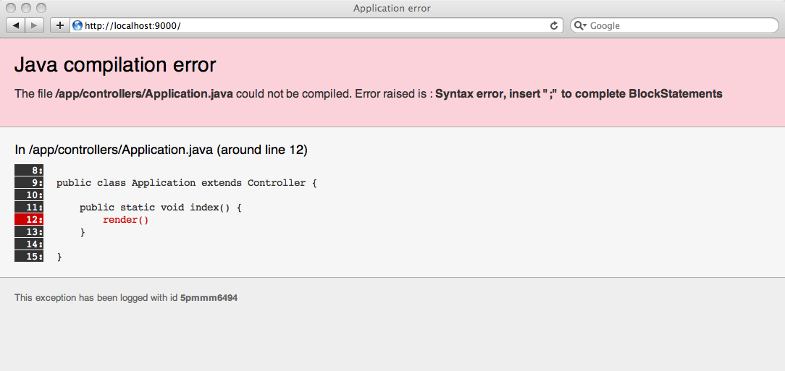

Play framework overview
The Play framework is a clean alternative to bloated Enterprise Java stacks. It focuses on developer productivity and targets RESTful architectures. Play is a perfect companion to agile software development.
The Play framework’s goal is to ease web applications development while sticking with Java. Let’s see how this is possible.
Wanna see some code?
Check Five cool things you can do with play, or start directly with the hello world tutorial.
A Java framework without the pain
Play is a pure Java framework and allows you to keep your preferred development tools and libraries. If you already use Java as a development platform you don’t need to switch to another language, another IDE and other libraries. Just switch to a more productive Java environment!
Fix the bug and hit Reload
The Java EE platform is infamous for low-productivity web application development, mainly due to repeated and tedious compile-package-deploy cycles.
That’s why we rethought the development cycle to make developing with Play an efficient process.
The framework compiles your Java sources directly and hot-reloads them into the JVM without the need to restart the server. You can then edit, reload and see your modifications immediately, just as in a LAMP or Rails environment.
It’s so fun that you can even work with a simple text editor and skip a full-featured Java IDE if you want.
Whenever an error occurs, the framework makes its best effort to identify and show you the problem.

Even the stack traces are stripped down and optimized to make it easier to solve problems. Look how template execution is nicely integrated to the Java stack trace.
Simple stateless MVC architecture
You’ve got a database on one side and a web browser on the other. Why should you have a state in between?
Stateful and component based Java Web frameworks make it easy to automatically save page state, but that brings a lot of other problems: what happens if the user opens a second window? What if the user hits the browser back button?
The Share Nothing architecture is promoted by many Web application frameworks from PHP to Ruby on Rails or Django. As the browser is becoming more and more powerful, it is now easy to use Ajax or offline storage to solve the state problems client-side.
We don’t need to hack the HTTP model anymore to rebuild a fake state over the Web. Another aspect of ‘share nothing’ is to make it easier to render portions of the page in parallel, and to do partial page updates (or progressive enhancements).
HTTP-to-code mapping
If you’re already using another Java Web framework like the Servlet API or the Struts framework, you have already used an abstract view of the HTTP protocol with strange Java APIs and concepts. We think differently. A Web application framework should give you full, straightforward access to HTTP and its concepts. This is a fundamental difference between Play and other Java web application frameworks.
HTTP, the Request/Response pattern, the REST architectural style, content-type negotiation, URI are all major concepts for the Play framework.
For instance, binding a URI pattern to a Java call is just one line:
GET /clients/{id} Clients.show
If Ajax, REST and managing back/forward movement between web pages are some of the issues you face in your day-to-day web development, just give Play a try.
Efficient templating engine
We like the idea behind JSP and Expression Language. But why do we need so many configuration files to create a tag library? Why can’t we have full access to the underlying object model? JSP has a lot of limitations and this is indeed frustrating. That’s why we’ve created a custom template system, inspired by JSP but without its constraints!
You and anyone else should be tired of writing things like this:
<%@ taglib uri="http://java.sun.com/jsp/jstl/core" prefix="c" %>
<%@ taglib uri="http://java.sun.com/jsp/jstl/functions" prefix="fn" %>
<c:choose>
<c:when test="${emails.unread != null && fn:size(emails.unread)}">
You have ${fn:size(emails.unread)} unread email(s)!
</c:when>
<c:otherwise>
You have no unread emails!
</c:otherwise>
</c:choose>
We think you would certainly prefer to write:
You have ${emails.unread ?: 'no'} ${emails.unread?.pluralize('email')} !
The expression language used by the play template engine is Groovy, which provides a syntax consistent with Java. While Play mainly uses the templating system to render HTML responses, you are free to use it to generate any other documents such as e-mail messages, JSON responses, etc.
JPA on steroids
The Java Persistence API (JPA) is the cleanest object-relational mapping (ORM) API available for Java. If you already know it you will be amazed how much simpler it becomes with Play. With nothing to configure, Play will automatically start the JPA Entity Manager and magically synchronize it while the code is reloaded.
Moreover if you use the provided play.db.jpa.Model superclass it will help make your code prettier. Have a look:
public static void messages(int page) {
User connectedUser = User.find("byEmail", connected()).first();
List<Message> messages = Message.find(
"user = ? and read = false order by date desc",
connectedUser
).from(page * 10).fetch(10);
render(connectedUser, messages);
}
Test driven development (if you like it)
The integrated test runner makes it easy for you do test-driven development. You can write all kinds of tests, from simple unit tests to full acceptance tests, and run them directly in a browser using Selenium. Code coverage is also measured.
Full-stack application framework
The Play framework was initially inspired by our own Java applications. It has all the tools needed to create a modern web application, including:
- relational database support through JDBC.
- object-relational mapping using Hibernate (with the JPA API).
- integrated cache support, with easy use of the distributed memcached system if needed.
- straightforward web services consumption either in JSON or XML (we are talking real web services here; not the SOAP stuff).
- OpenID support for distributed authentication.
- your web application ready to be deployed anywhere (application server, Google App Engine, Cloud, etc…)
- image manipulation API.
The modular architecture lets you combine a web application with many others. Thanks to application modules, you can reuse your Java code, templates and static resources (such as JavaScript and CSS files) in a simple way.
Give it a try
Install the Play framework and start developing your first application.